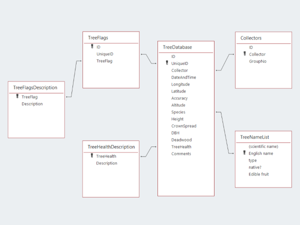

A database is a storage system designed to manage large datasets efficiently. Users can query and manipulate data using joins, relates, and often a Structured Query Language (SQL).
A Spatial Database is a special type of standard databases, with the additional enhanced capabilities of storing and accessing spatial and location data. The additional spatial functionality enables the storage of spatial data as attribute values in a table. In a vector data model, a single spatial value is often a geometric primitive, usually in the forms of point, line, polygon, etc. Some spatial databases are also capable of storing raster data. A Spatial Database is also called a Geospatial Database, Graphic Database, or Geodatabase y Esri (the world's leading supplier of GIS software).
Database management is a series of actions for manipulating a database throughout its lifecycle to cater for data growth. It plays a crucial role in managing the size of datasets, updating datasets, controlling data accuracy, ensuring data security, removing data redundancy, and preventing data loss. A well-designed database is essential to performing GIS tasks because of its capability of efficient and effective storage and access to an extensive volume of complex spatial data.
Database design and modeling is a crucial stage in database management. A well-designed database is essential to performing GIS tasks because of its capability of efficient and effective storage and access to an extensive volume of complex spatial data. Having a well-structured database will protect your data, and more importantly, to save you time and resources from having to deal with all sorts of data problems.
It is always a good practice to organize and understand the data we have at hand before designing a database. Upon listing all data by entity, i.e. by its theme, we can draw out an Entity Relationship Diagram (ERD). An ERD provides a visual reference to building a data model by clarifying the relationship between each entity. There are three primary relationships between entities:
Relational Databases and Normalization are other critical concepts in database management. The goal of a relational database design is to generate a set of relation schemas that allow information storage without unnecessary redundancy, and allows the information to be retrieved easily. Normalization, on the other hand, is the process of organizing the attributes and tables of a relational database to minimize data redundancy and maximize data integrity. It also simplifies the database design in order to achieve the optimal structure composed of atomic elements, with the ultimate goals to improve the speed, accuracy and efficiency of the database and information retrieval.
Normalization should ideally be performed on every database. There are many levels of normalization, and each one builds on the previous level. In general, a relational database shall at least be on the third level of normalization to be efficient. Below is an example of the relationships of entities in a relational database at the Third Normal Form.
We understand that you may already have some existing data before conducting a new session of data collection. Often, some older data is available in the forms of tables and spreadsheets, which may require a more sophisticated data storage method to consolidate the old and new data.
With our professional knowledge and extensive experience in data and database management, we ensure that all GIS data collected and provided by our clients are safely, effectively, and most importantly, efficiently stored in a well-designed relational database in compliance with the best practice in the industry, with the capability of future expansion in the databases.